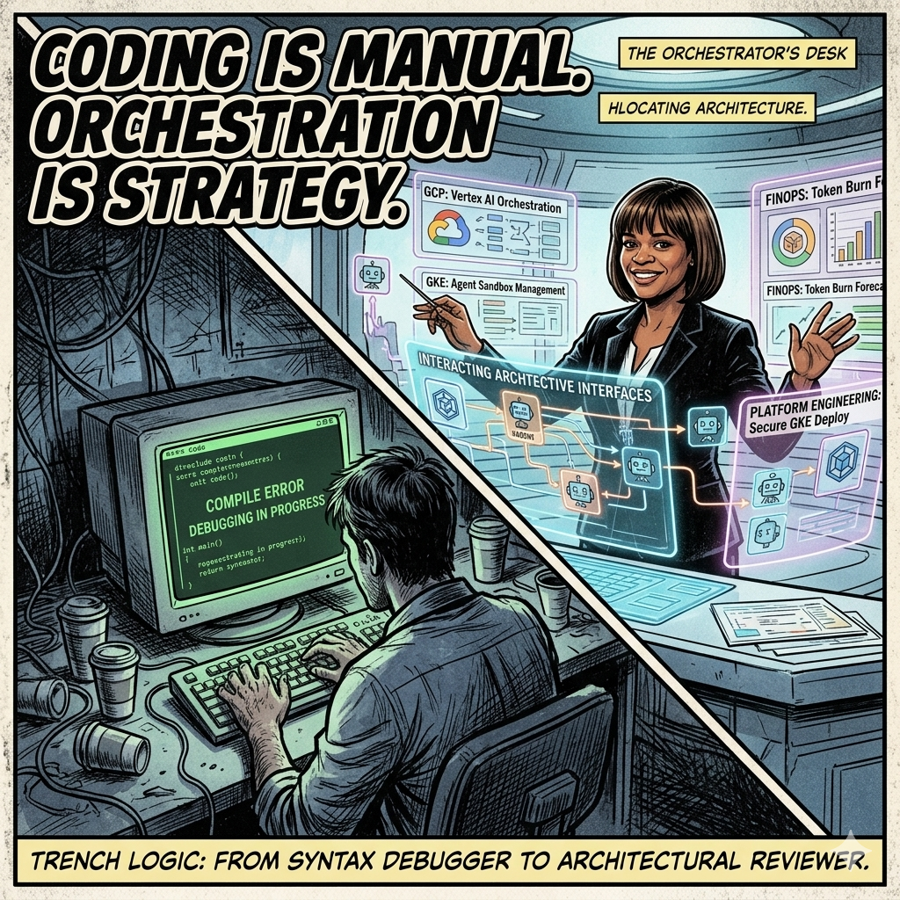
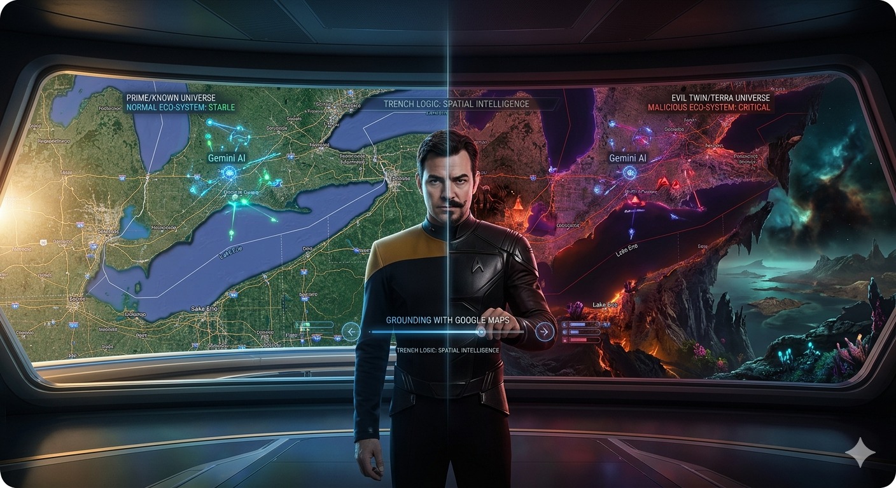

From the Laptop
Enterprise Security Blueprints: Connecting Apigee X, Cloud Armor, and Private GKE Clusters
October 11, 2026 by
Kee AI Architect, @The Launchpad Foundry
Introduction: The Perimeter Gap
Your microservices are only as secure as the gatekeeper standing at the edge.
When building production-grade enterprise architectures on Google Cloud Platform, exposing workloads on Google Kubernetes Engine (GKE) directly to public load balancers without multi-layer edge defense and application-layer payload inspection introduces critical vulnerabilities. Naive ingress setups invite volumetric DDoS spikes, SQL injection vectors, and malformed payload exploits that can exhaust compute resources or compromise internal cluster networks.
"To achieve true operational resilience, you need a defense-in-depth architecture. In this 4-part engineering series, we walk through building a zero-trust, production-ready cloud topology that couples edge filtering via Google Cloud Armor, API proxy management via Apigee X, and containerized microservices hosted on private GKE clusters."
In Part 1, we establish the core architectural topography and lay the foundation using Infrastructure-as-Code (IaC) with Terraform.
The Production Topography
In an enterprise posture, backend application pods should never possess public IP addresses or accept untrusted traffic directly. Instead, traffic follows a strictly controlled ingress pipeline:
[ Client / Public Internet ]
│
▼
┌─────────────────────────────┐
│ Cloud Armor (WAF & Edge) │ <-- Blocks IPs, Rate-limits, OWASP Signatures
└──────────┬──────────────────┘
│
▼
┌─────────────────────────────┐
│ Global External HTTP(S) LB │ <-- SSL Termination & Anycast Routing
└──────────┬──────────────────┘
│
▼
┌─────────────────────────────┐
│ Apigee X API Gateway │ <-- OAuth, Quotas, JSON/XML Threat Protection
└──────────┬──────────────────┘
│ (Private Service Connect / VPC Network)
▼
┌─────────────────────────────┐
│ GKE Private Cluster (Pods) │ <-- Zero Public IPs, Isolated Subnets
└─────────────────────────────┘
Architectural Pillars
- Perimeter Defense First (Cloud Armor): Malicious bots, scraper traffic, and volumetric layer-7 attacks are evaluated and dropped at Google’s edge before consuming compute cycles inside your Google Cloud project.
- Application-Layer Payload Hardening (Apigee X): Incoming HTTP requests are validated against structural schemas (JSON/XML depth limits, string bounds, and token limits) before being forwarded downstream.
- Isolated Private GKE Cluster: The Kubernetes control plane and worker nodes reside on dedicated private CIDR ranges with zero direct public IP exposure. Communication between Apigee X and GKE is anchored securely via Private Service Connect (PSC).
The Infrastructure Blueprint (Terraform)
To ensure this topography is completely reproducible, we initialize the private network, secondary pod/service IP ranges, and private GKE cluster via modular Terraform:
Terraform
resource "google_compute_network" "vpc_enterprise" {
name = "enterprise-vpc-prod"
auto_create_subnetworks = false
}
resource "google_compute_subnetwork" "gke_subnet" {
name = "gke-subnet-central"
ip_cidr_range = "10.0.0.0/16"
region = "us-central1"
network = google_compute_network.vpc_enterprise.id
secondary_ip_range {
range_name = "gke-pods-range"
ip_cidr_range = "10.48.0.0/14"
}
secondary_ip_range {
range_name = "gke-services-range"
ip_cidr_range = "10.52.0.0/20"
}
}
resource "google_container_cluster" "private_cluster" {
name = "enterprise-gke-core"
location = "us-central1-a"
network = google_compute_network.vpc_enterprise.name
subnetwork = google_compute_subnetwork.gke_subnet.name
remove_default_node_pool = true
initial_node_count = 1
private_cluster_config {
enable_private_nodes = true
enable_private_endpoint = false
master_ipv4_cidr_block = "172.16.0.0/28"
}
ip_allocation_policy {
cluster_secondary_range_name = "gke-pods-range"
services_secondary_range_name = "gke-services-range"
}
}
What's Next?
In Part 2 of this series, we build out the automated GitOps CI/CD pipeline using GitHub Actions to automate both infrastructure provisioning and Apigee proxy policy deployments.
Accelerate Your Infrastructure with The Launchpad Foundry
Looking to audit or harden your current edge security posture on GCP?
Through The Launchpad Foundry, we deliver production-grade cloud architecture blueprints and targeted technical audit services:
- Edge & API Security Review: A comprehensive technical audit inspecting your Apigee X threat protection rules, Cloud Armor WAF configurations, and load balancing setup to eliminate edge vulnerabilities.
- Enterprise Infrastructure Modules: Production-tested Terraform blueprints ready to deploy into your GCP organization.
👉 Explore our technical services and blueprints on The Launchpad Foundry Storefront.
#api
#GoogleCloud
#apigee
#CloudArmor
#GKE
New Game Releases
May 2, 2026 by
Kee
Last Updated: May 2, 2026
MAY 2026*
- Constance (ns, ps5, xbx) - May 1
- Wax Heads (pc, xbx, ps5, ns) - May 5
- Mixtape (pc, xbx, ps5, ns2) - May 7
- Battlestar Galactica: Scattered Hopes (pc) - May 11
- Indiana Jones and the Great Circle (ns2) - May 12
- Clockwork Ambrosia (pc) - May 12
- Outbound (pc, xbx, ps5, ns2, ns) - May 14
- Dark Light: Survivor (pc) - May 14
- Subnautica 2 (pc, xbx) - May 14 *Early Access
- Forza Horizon 6 (pc, xbx) - May 19
- Darksiders: Warmastered Edition (ps5, xbx) - May 19
- Thick as Thieves (pc) - May 20
- Hotel Architect (pc) - May 20
- Psyvariar 3 (pc, ns2, ps5, xbx) - May 20
- Coffee Talk Tokyo (ns, pc, ps5, ns) - May 21
- Gallipoli (pc, ps5, xbx) - May 21
- Yoshi and the Mysterious Book (ns2) - May 21
- Zero Parades: For Dead Spies (pc) - May 21
- Bubsy 4D (pd, xbx, ps5, ns2) - May 22
- City Tales: Medieval Era (pc) - May 22
- Lego Batman: Legacy of the Dark Knight (ps5, xbx, pc) - May 22
- Tales of Arise: Beyond the Dawn Edition (ns2) - May 22
- Paralives (pc) - May 25 *Early Access
- The Relic: First Guardian (pc, ps5, xbx) - May 26
- Birushana: Winds of Fate (ns) - May 26
- Stonemachia (pc) - May 26
- Yerba Buena (pc, ps5, xbx) - May 26
- 007 First Light (pc, ps5, xbx) - May 27
- Crashout Crew (pc) - May 28
- Wandering Sword (ps5) - May 28
- Strays (ns2) - May 28
- Monochrome Mobius: Rights and Wrongs Forgotten (ns2) - May 28
- My Little Puppy (ns) - May 29
- Little Nightmares 2: Enhanced Edition (ns2) - May 29
The Must Watch Heavy Hitters
I'm a Sony Ride or Die, but I have to know what everyone is playing on their
HexBox and PC's. Even if its exclusive for Early Access, the technical shift to
Unreal Engine 5 is something the architect in me can't help but obsess over. I'll
be tuning into my digital friends streams to see how those titles handle, while my
gaming fanatic brother prepares his wallet for 007 First Light to drop on PS5 later
this month. The pact remains we might not all be on the same platform this week,
but we're all watch State of Play and texting until the upper room.
I'm too busy to play nowadays but I plan to take a gamecation (vacation where I just
play games, stream, and catch up with friends and family while we play together) some
time this summer. I miss gaming all night and didn't realize how much it helped me
relax.
Mixtape (May 7)
A narrative adventure form Annapurna follows three friends on their last night of
high school, using a literal mixtape of memories to drive the gameplay. You play
through dreamlike vignettes ranging form skateboarding to abandoned them parks,
all set to a massive 80s/90s soundtrack.
I am always down to watch a game I can sing to and play. I need to see this one
on Youtube or Twitch.
Battlestar Galactica: Scattered Hopes (May 11)
A Tactical roguelite puts you in command of the colonial fleet immediately following
the fall of the twelve colonies. Developed by the Crying Suns team, it focuses on
resource management, crew morale, and desperate FTL jumps to stay ahead of the Cylons.
I want to play this one so I can get fracking obsessed with Battlestar again. I need
this game.
Indiana Jones and the Great Circle (May 12)
My cousin Indy finally makes his debut on Nintendo's new hardware with a first person
adventure set between Raiders and Last Crusade. Its suppose to be a major test for Switch
2, they say it will have detailed vistas and physical combat that utilizes the new consoles
DLSS capabilities.
I hope its good but I want to watch other people play it to see if its for me or not.
Subnautica 2 (May 14 *Early Access)
An anticipated sequel that takes a new alien ocean world called Zazura, featuring a complete
shift to Unreal Engine 5. For the first time in the series, it introduces 4 player co-op,
allowing you to survive the depths with your partners.
I am interested in the development of this one with Unreal but games where I can drown or
get bit by fish or a shark, Absolutely NOT!
Forza Horizon 6 (May 19)
The Horizon Festival moves to Japan, with a massive map that spans from the neon streets of
Tokyo to the winding mountain passes of Mt. Fuji. It's a 150GB technical powerhouse that showcases
the limit of modern lighting and photogrammetry.
I am always into driving like a desperate fool on the loose with nothing to lose. I rather
watch others play but I'm so into these games because they are always so beautiful.
007 First Light (May 27)
Finally, IO interactive's take on a young James Bond is already got the streets talking
like it will be game of the year, blending linear action with the sandbox stealth of the
Hitman series. Its suppose to be a global origin story that is all about thinking on your
feet and roguish with silver tongue problem solving.
My brother already pre-ordered it and has plans to play this game to the white meat and
when he burst it open he will tell me all about it, trust me. He will be trophy hunting for
a while.
#Games
#007FirstLight
#mixtape
#forza
#indianajones
#battlestar
#gaming
*SOURCES:
https://www.gamesradar.com/video-game-release-dates
The Agentic Pivot: Scaling Trench Logic with Google Cloud in 2026
May 3, 2026 by
Kee
The AI Pilot era is over. Last year was about asking can we build an agent?
this year is about managing a swarm of them. At Trench Logic Studio, we're integrating
the lates GCP breakthroughs to move beyond static logic and into true, high fidelity
orchestration.
Vertex AI Agent Studio: Moving Beyond the Dialogue Tree
Google has collapsed its entire agent stack into the Gemini Enterprise Agent Platform.
This includes the new Agent Studio, a low code interface that lets us build reasoning
loops and persistent Memory Banks as NPCs actually remember your past interactions.
TPU 8i: The inference Powerhouse
The new 8th gen TPU 8i chips are purpose built for inference. They offer an 80% better
performance per dollar ratio, which is critical for Trench Logic because it means we can
run complex reasoning models for every character in the world without the cost spiraling
out of control.
GKE Agent Sandboxes: Safe AI Execution at Speed
Google Kubernetes Engine (GKE) now features Agent Sandboxes running on custom Axion N4A
(Arm based) chips. This allows our AI agents to safely execute model generated code in a
isolated environment with sub second cold starts, meaning the world can literally rewrite
its own logic on the fly without crashing the core system.
The Foundry Advantage
While the big studios are still trying to figure out how to manage a single pilot AI we're
building an Agentic Taskforce. By pairing our 30 years of system logic with the Gemini 3.1
ecosystem, Trench Logic Studio isn't just playing the game we're rewriting the engine.
#gameDev
#Gemini3
#VertexAI
#AgentStudio
#TPU8i
#GKE
The Death of the Coder, The Birth of the Orchestrator
May 4, 2026
by
Kee
In 30 years of development, I've seen languages come and go, but the shift
we are seeing in 2026 is fundamental. We are moving away from writing lines
of code and toward orchestrating intent. Here is how the general development
landscape has changed while we weren't looking.
AI Native IDEs: Beyond Autocomplete
We've moved past simple code suggestions. Modern IDEs now feature Context Aware
Reasoning, where the editor understands your entire repository architecture. It's
no longer about finishing a function, it's about the AI suggesting a refactor of
your entire state management based on a single comment.

The Natural Language Build Pipeline
The biggest shift in general dev is the Gemini to Git workflow. Developers are
now using natural language to describe a feature, and the AI agents are drafting
the PR, running the unit tests, and checking for security vulnerabilities before
a human even touches the keyboard.
Serverless Everything & the Zero Ops Dream
With integration of AI into platforms like GCP and Cloudflare, IaC (infrastructure
as Code) is becoming Infrastructure as Intent. You describe the load requirements,
and the platform automatically provisions the global edge network, the vector
databases, and the security layers.
The Jones Logic
Coding was never about the syntax it was always about the logic. Whether your
building a companion app for an LG TV or a global AI Core for R & D, the tools are
faster, but the brain behind the keyboard is still the most important part of the stack.
We're not being replaced, we're finally being freed to build at the speed of thought.
#GCP
#IDEs
#NLP
#Deployment
#Pipeline
#IaC
#Serverless
50% There: My Roadmap to Google Cloud Professional Architect
May 5, 2026 by
Kee
In a 30 year career, you learn one thing: if you stop learning, you stop building.
Right now, I'm deep in the trenches of the Google Cloud Professional Architect Path.
I'm exactly halfway through, and the shift from cloud to Agentic AI is changing
everything I thought I knew about systems design.
The Professional Cloud Architect Grind
Being 50% through the Architect path means I'm moving past basic storage and compute
and into the Deep Logic of the Google Cloud Well Architected Framework. I'm currently
mastering the Reliability and performance Optimization pillars, specifically how to
design multitiered distributed applications that can survive a regional outage without
blinking.
Updated: 5/10/2026
Pro Cloud Architect Path: 64%
Mastering Agentic AI: The Gemini 3.1 Era
Beyond the certification, I've started the new Agentic AI Learning path. We've moved
from simple prompt engineering to the Gemini 3.1 Flash ecosystem. I'm focusing on Multimodal
Function Calling, teaching agents not to just talk, but to actually use tools like
search, Maps, and custom APIs to execute tasks in the real world.
Hands on R & D: From Labs to Production
Training isn't just watch videos; it's breaking things in the Vertex AI Sandbox. I'm
currently testing the Model Context Protocol (MCP) to see how I can transform standard
enterprise APIs into tools that my AI agents can use autonomously.
The Certification Countdown
The goal is simple: Full certification by summer. But the real prize isn't the digital
badge, its the ability to walk into a clients office and architect a solution that uses
Gemini 3.1 and TPU 8i to solve problems that were impossible two years ago. One module
at a time, we're building the future of Trench Logic.
#CloudArchitect
#Gemini3
#ModelContextProtocol(MCP)
#GoogleSkills
#R&D
#GoogleCloud
The New Operational Paradigm: From DevOps to AgenticOps
May 6, 2026 by
Kee
After three decades in systems logic, I've seen the Ops world evolve from
manual rack and stack to automated CI/CD pipelines. But in 2026, the
challenge isn't just deploying code, its orchestrating intelligence. At
Trench Logic Studio, we are building the Foundry on a foundation of
integrated Agentic Ops.
MLOps: Beyond the Model
MLOps is no longer just about training a model; its about the entire lifecycle
of Gemini 3.1 integration. We're using Vertex AI Pipelines to automate the
evaluation of our agents, ensuring that every logic update is tested for
hallucination thresholds before it hits the production environment.
Platform Engineering: The Internal Developer Portal
We've moved past basic DevOps into Platform Engineering. I'm architecting an
internal portal that allows me to spin up a pre configured Agent Sandbox in GKE
with one command. This removes the friction of infrastructure and lets me focus
entirely on the logic of the Aether Economy.
FinOps in the Era of Infinite Context
With 1M+ token context windows and TPU 8i inference, FinOps is more critical
than ever. I'm using GCP Cost Management with AI driven forecasting to monitor
our token burn rate in real time, ensuring our R & D stays lean while we scale.
The Orchestrator's Manifesto
The Tools change, but the goal remains the same. Stability, Scalability, and
Logic. Whether its a simple web app or a complex multiagent simulation, the Ops
are the hidden gears that make the magic possible. At Trench Logic, we build
gears that don't just turn they think.
#Ops
#DevOps
#FinOps
#AgenticOps
#Logic
#CostManagement
Spatial Intelligence: The Final Frontier of Agentic Reasoning
May 7, 2026 by
Kee
In 30 years of development, we've mostly taught computer to understand what
something is. In 2026, we are finally teaching them where it is and how it
moves. At Trench Logic Studio, we're leveraging GCPs new spatial reasoning
capabilities to bridge the gap between digital logic and physical reality.
Gemini 3.1 Pro & Advanced Spatial Mapping
The latest Gemini 3.1 Pro upgrade wasn't just about text; it introduced massive
improvements in Visual Spatial Reasoning. The model can now interpret complex 3D
voxel data and procedural terrain, which is exactly how we're building our City
Planning and Terrain Simulation modules.
Grounding with Google Maps in Vertex AI
Google officially launched Grounding with Google Maps for Vertex AI. This allows
our agents to access real time geospatial data for over 250 million places. For
the Lake Erie AI Sentinel Experiment, this is a game changer, our agents can now
correlate model predictions with actual landmark and routing data in real time.
NVIDIA G4 VMs & Realtime Spatial Simulation
To power these spatial models, we're looking at the new NVIDIA G4 Blackwell VMs
on GCP. These are purpose built for physically accurate simulations. They allow us
to run realtime 3D rendering and spatial reasoning side by side, which is the
backbone of any Digital Twin Project.

Architecting the 3D Web
The web is no longer flat. Whether its the streets of Tokyo in Forza or the depth
of the water in Subnautica 2, the future of development is spatial. At Trench Logic,
we aren't just building apps; we're building environments that understand the world
they live in.
#visualSpatialReasoning
#geoSpatial
#NVIDIAG4VMs
#RealtimeSimulation
#GoogleMaps
#digitalTwin
#predictions